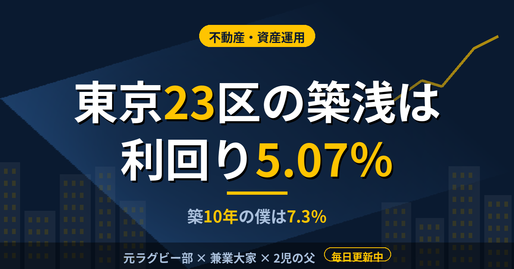

不動産・資産運用東京23区の築浅一棟アパートは利回り5.07％。築10年で7.3％を買った僕の位置
2棟目を探すとき、最初は東京も候補に入れて物件の一覧を眺めていた。1棟目に買ったのは、尼崎の築10年の木造9戸で、価格は1億700万円、表面利回りは7.3％。この数字が市場のどのあたりにあるのか、健美家が公表している四半期レポートで確かめた。
全国平均は7.91％、東京23区は築10年未満で5.07％
健美家の2026年7〜9月期レポートによると、全国の一棟アパートの平均価格は9,079万円、表面利回りは7.91％だった。東京23区に絞ると、一棟アパートの平均価格は1億4,062万円まで上がる。利回りは築10年未満で5.07％、築20年以上で6.03％と、築年数で約1ポイントの差がある。
一都三県の一棟アパートの平均価格は1億232万円で、僕の1棟目の価格に近い。ただ、東京23区だけを見ると平均価格は僕の購入価格より3,000万円以上高く、同じ予算では平均の物件に届かない。
種別を変えても傾向は同じだ。東京23区の一棟マンションは平均価格が3億299万円で、築10年未満の利回りは4.31％だった。大阪市の一棟マンションは平均1億8,867万円、神戸市は1億4,981万円。同じレポートの中でも、東京は価格が高く、利回りが低い。
7.3％は平均より低く、東京の築浅より高い
僕の7.3％を全国平均の7.91％と並べると、0.6ポイントほど低い。一方、東京23区の築10年未満の5.07％と比べると、2ポイント以上高い。ただし、この比較はそのまま使えない。平均には築年も構造もエリアも混ざっていて、尼崎の築10年と東京23区の築10年未満は、需要も賃料の水準も違うからだ。
ちなみに僕の7.3％は、満室想定の年間家賃786万円を購入価格1億700万円で割った数字だ。空室や固定費は引かれていないので、実際に手元に残るのはここから下がる。
東京23区では築20年以上の古い一棟アパートでも6.03％で、僕の7.3％には届かない。それでも、築年が浅いほど利回りが低くなる傾向は、数字ではっきり出ている。僕が買った物件は築10年で、駅から徒歩2分。築年と立地の両方を取りにいった結果が、7.3％という位置だったと整理している。
東京で6.5％以上を探したときの感触
実際に東京の一覧で利回り6.5％以上を条件にすると、戸数の少ない小さな物件か、駅から離れた物件ばかりになった。東京の平均価格が1億4,062万円であることを考えれば、予算を抑えて利回りを求めると、何かを削る形になるのは自然だと思う。
自己資金の枠は先に決めていた。諸費用は物件価格の8〜10％かかる。同じ枠の中で、東京の築浅を狙うのか、地方や郊外の築年を許容するのか。その選択を、平均の数字と自分の条件を並べて考えている。
平均利回りを知っても、買う理由にはならない。平均は物件選びの地図でしかなく、見るのは、固定費を引いたあとに手元に残る数字だ。2棟目も、そこから逆算して決める。
この記事は note にも掲載しています。